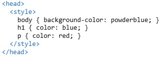

What is CSS?
Posted by Bryan D. Decena
CSS (Cascading Style Sheets) is a powerful tool used to style and format HTML documents, enabling developers to control the appearance and layout of web pages. It allows for customization of colors, fonts, spacing, positioning, and more, making web pages visually appealing and user-friendly
Ways to Use CSS in HTML
CSS can be applied to HTML in three primary ways:
- Inline CSS: Styles are applied directly to individual HTML elements using the style attribute. This is useful for quick, unique styling of specific elements.
- Internal CSS: Styles are defined within a < style >tag in the < head > section of the HTML document. This method is suitable for styling a single page.
- External CSS: A separate .css file is linked to the HTML document using a < link > tag in the < head > section. This is the most efficient method for styling multiple pages.



Benefits of Using CSS
CSS provides flexibility and efficiency in web design. It allows developers to:
- Define consistent styles across multiple pages by using external stylesheets.
- Separate content (HTML) from presentation (CSS), improving maintainability.
- Create responsive designs that adapt to different screen sizes and devices.
Key CSS Features
CSS enables customization of various aspects of a webpage:
- Text Styling: Change font size, color, and family.
- Layout Control: Use grids, flexbox, or positioning to arrange elements.
- Spacing: Adjust margins, padding, and borders.
- Special Effects: Add animations, transitions, and hover effects.
How CSS Works with HTML
When a browser loads an HTML page, it processes the CSS rules and applies them to the corresponding elements in the DOM (Document Object Model). For example:

With the following CSS:

The browser renders the < h1 > in red and the < p > with aqua text on a midnight blue background.
By leveraging CSS, developers can create visually stunning and highly functional web pages.